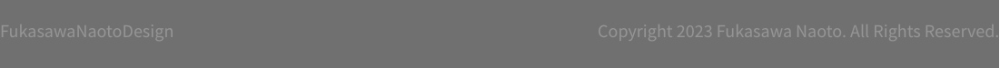

Fukasawa Naoto / Product Designer
후카사와 나오토 / 제품 디자이너
“나의 디자인은 사람을 관찰하는 것에서 시작된다”
1956년 야마나시현 출생. 1980년 다마미술대학 제품디자인과 졸업. 같은 해 세이코 엡손에 입사해 첨단 개발 디자인을 담당했습니다. 1989년에 그는 미국으로 이주하여 ID Two(현 IDEO San Francisco)에 합류했습니다. 주로 실리콘밸리 산업에 초점을 맞춰 7년 동안 기술을 연마한 후 1996년 일본으로 돌아왔습니다. 후카사와는 IDEO의 도쿄 사무소를 설립하고 이끌어 회사의 일본 디자인 컨설턴트 기반을 마련했습니다. 그는 2003년에 독립하여 NAOTO FUKASAWA DESIGN을 설립했습니다.
현재 후카사와는 이탈리아, 독일, 미국, 스위스, 스페인, 중국, 한국, 태국, 대만, 싱가포르, 프랑스, 포르투갈, 스웨덴, 핀란드 등 전 세계의 다양한 주요 브랜드를 디자인하고 현지 컨설팅 및 디자인을 담당하고 있습니다. 일본 기업. 그의 디자인은 정밀 전자장비부터 가구, 인테리어 공간, 건축까지 다양한 분야에 걸쳐 있습니다.
후카사와는 사람들의 희망과 기대를 담아내는 조용한 힘이 담긴 디자인과 디자인 철학으로 잘 알려져 있습니다. 그는 “행동에 녹는 디자인”, “의식의 중심”, “정상성”, “개요”, “원형” 등의 용어를 사용하여 이를 전달하며 이러한 철학을 자신의 디자인에 계속해서 실천하고 있습니다.
후카사와는 디자인의 원동력이 사람들의 무의식적인 행동에서 발견된다고 판단하고 이를 ‘생각 없이(Without Thought)’라고 명명했습니다. 그는 1999년부터 매년 같은 이름의 워크숍을 개최해 왔으며, 이러한 워크숍의 성과를 책으로 계속 발표하고 있습니다.
후카사와는 일본 민예관 큐레이터입니다. 다마미술대학교 통합디자인학과 교수이자 21_21 Design Sight의 디렉터 중 한 명입니다. 그는 또한 무인양품의 디자인 자문위원이자 마루니의 아트 디렉터이기도 합니다. 그는 닛케이 신문의 우수한 제품 및 서비스상 심사위원이자 마이니치 디자인상 심사위원이기도 합니다. 2006년에는 재스퍼 모리슨과 함께 ‘슈퍼 노멀(Super Normal)’을 설립했습니다. 2010년부터 2014년까지 굿 디자인 어워드 회장을 역임했다. 2012년 브라운상 심사위원, 2017년 로에베 공예상 심사위원을 맡았다. 그는 산업을 위한 왕립 디자이너(왕립 예술 협회)라는 칭호를 받았습니다. 2018년 이사무 노구치상을 수상했다.
